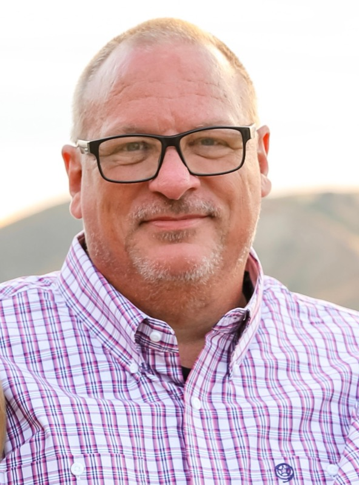
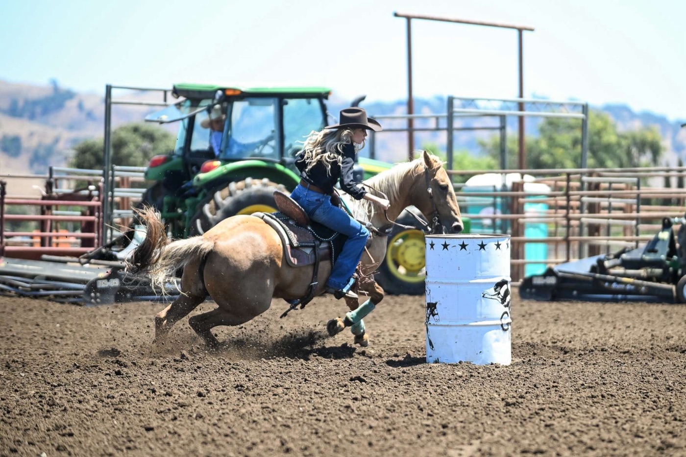
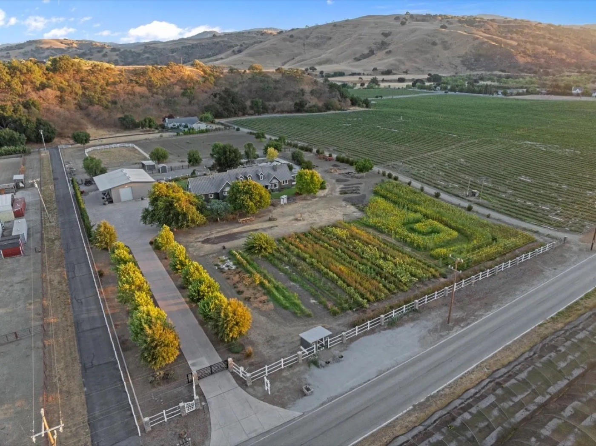
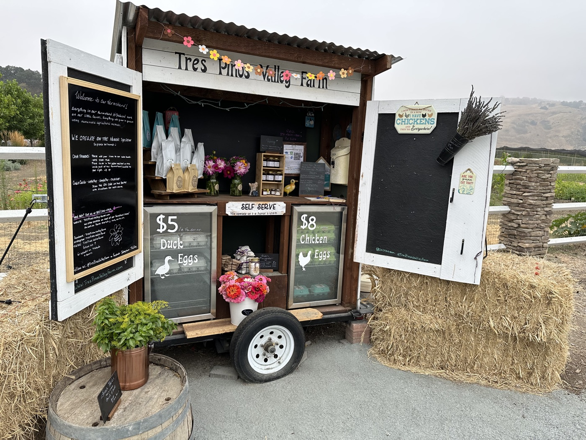
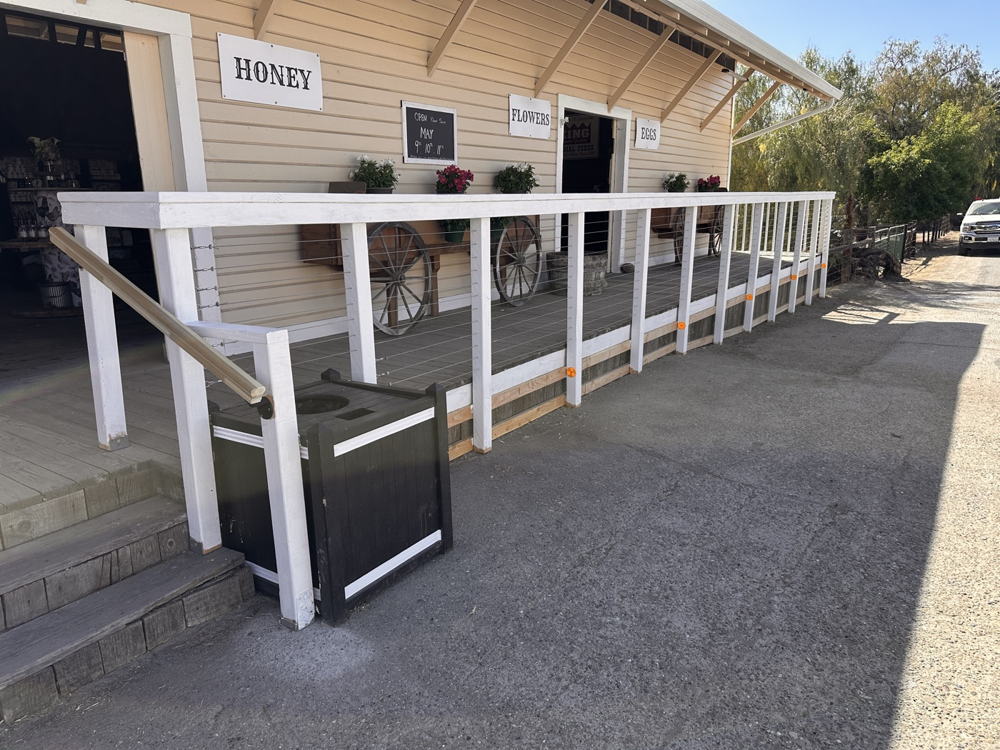
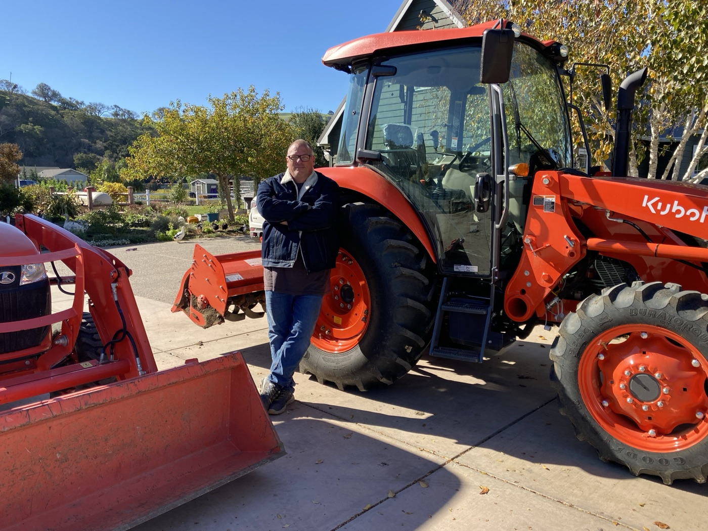
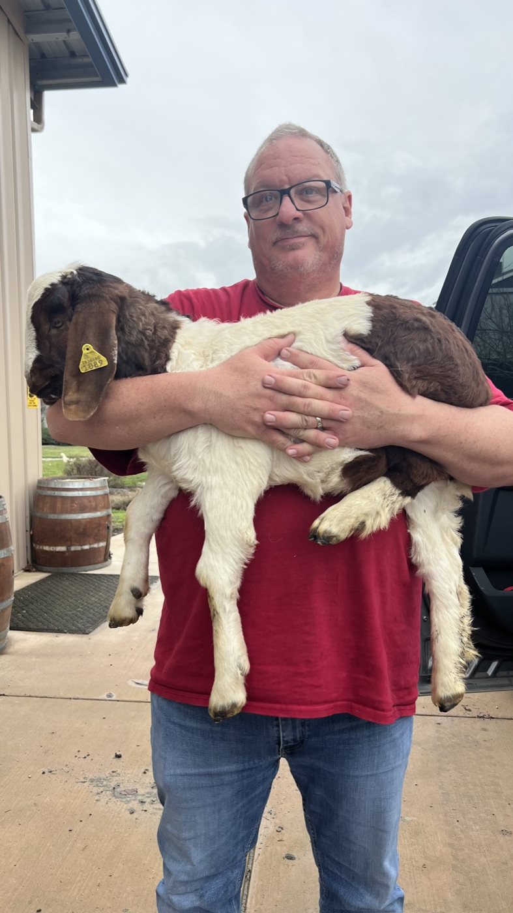

I lead a software development team in Apple Hardware Engineering, and I build production software with AI coding agents. Over thirty years in the industry I've often been among the first to put a new technology to work.
I'm open to new opportunities as a software builder.

I've managed software teams since 1996, and directing AI coding agents takes the same skills: set the direction, give context, review the work and hold it to a standard. With agents writing the code, I build and ship production software myself, often in a few weeks.
Thirty years of hands-on infrastructure work means very little of the stack is abstract to me, from hardware to operating system to runtime.
Hardware engineers rely on a large electronic parts database that for years could only be reached through its web interface and a brittle legacy API. Once AI tools arrived, engineers wanted to write code against it.
I learned the search engine underneath the application, mapped how it was configured (dimensions, queries, fields and taxonomy) and built a REST API around it. The legacy application didn't change and didn't need to be re-tested.
Scroll diagram →
When two circuit boards plug together, every pin pair has to agree. I built a central rules service that classifies each pair as identical, equivalent, conflict, related or unrelated, names the rule that decided it and can trace every step.
Version 1.0 went up in a week, and user feedback has driven many releases since. A regression suite of real, human-approved pin pairs guards every release.
Friction removedEvery design tool used to compare pins its own way.
An MCP server gives an AI agent read-only tools over logs, source code, databases, job scheduler state and PLM transactions, so it can diagnose a failed hardware design promotion from its ID alone. A small Go bridge handles sign-in for the agent client.
In the first proof of concept it traced a failure to five interacting causes, a combination nobody would have written a diagnostic rule for.
Friction removedTriage used to need a senior specialist.
A configuration database for engineering applications, hosts, databases and data assets that checks every record again and again against live systems. Observers watch runtime, deployments and source code, and every human assertion has to predict something that should still be observable. When sources disagree, it reports the disagreement instead of picking a winner.
"Rot is the enemy, observation is the defense, and visible drift is the product."
It's still a research project. I expect its real value to come from deep, correlated change detection.
Friction removedHand-kept inventories go stale.
Testing the product lifecycle promotion pipeline takes disposable designs that are still plausible PLM submissions, which means they pass every quality check a real promotion to fabrication has to pass. This tooling copies an existing schematic design, performs the one rewrite no supported tool handles and hands the rest back to the official tools.
Friction removedA design can't be promoted twice.
I manage a team of software developers who build and run internal applications for hardware engineers, covering PCB request workflow, schematic review, parts data and bills of materials.
I'm also product owner for a schematic review application built by an outsourced development team. When a large legacy workflow application lost its developer, I made its recent changes myself through AI agents, using a workflow I wrote that takes each request from intake to a reviewed branch. I also contribute code to other teams' applications.
I was born in Montana and grew up in Oregon, where I went to Oregon State and earned a B.S. in Liberal Studies with a focus on economics. Most of my computer science came from running the university's Unix systems.
My wife and I live in the Bay Area. We have three children. Two are in college, studying agriculture and horses, and our son works in IT.
I love every part of California.


In 2020, during COVID, we moved to five acres outside Hollister near Tres Pinos. We planted crops and opened a roadside stand selling chicken and duck eggs, pumpkins and cut flowers on the honor system, and later added hardneck garlic, honeybees, tractors and livestock.
In 2021 we opened Tres Pinos Valley Farmstand, a 1,200 sq ft store in Tres Pinos that I built out myself. We sold the store in 2025, and it's still open as Daisy's Tres Pinos Farmstand. We sold the farm that same year to move closer to work. Someday I hope to move somewhere affordable and start the farm again.
In 2021 my favorite coffee vendor stopped carrying my favorite beans, so I bought a roaster and started roasting my own. Friends asked for more, then the roadside stand started selling it, then the store. I still roast and sell wholesale to the farmstand.




I built this page the way I build software now. I specified the design, an AI agent wrote the code and I reviewed it.